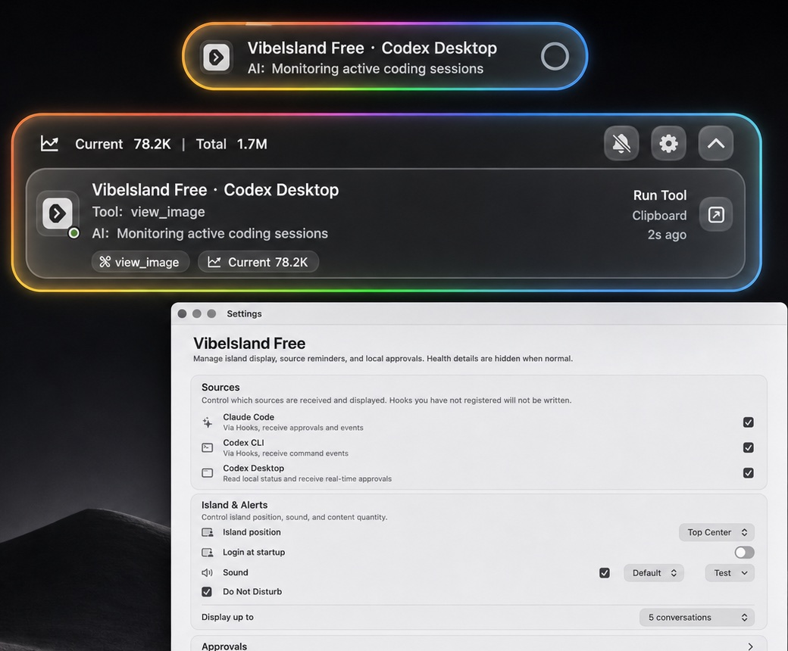

Whether long tasks are still moving
Builds, searches, and tool calls can run for minutes. The island keeps recent status visible without repeated terminal checks.
Product advantages
Vibelsland Free turns progress, tool activity, and approvals into a glanceable status display. It stays at the top of the screen so you can keep coding without losing context.

Why it matters
Builds, searches, and tool calls can run for minutes. The island keeps recent status visible without repeated terminal checks.
Allow, deny, continue, and cancel actions are gathered together, reducing confirmation cost across tools.
Claude Code, Codex CLI, and Codex Desktop status is presented together for parallel-session work.
Positioning
macOS native
The island, settings, approval window, and source controls are designed around macOS habits. It can stay resident, and it can stay quiet when you do not need it.